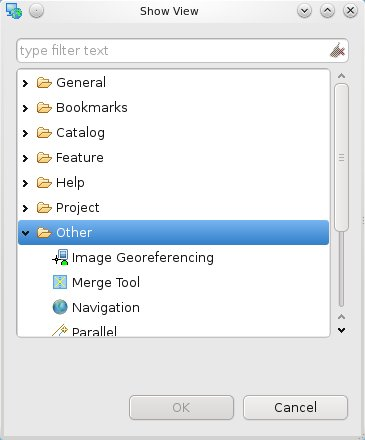

Image Georeferencing view¶
Introduction¶
The Image Georeferencing view is used to georeference an image using a set of coordinates and the desired CRS.
To enable the Image Georeferencing view, go to Window ‣ Show View ‣ Other... and choose Select Image Georeferencing from the Other category.

A map with a valid CRS is needed for the Image Georeferencing view to be able to run. Open a new map, load the layer you would like to use as georeferenced base. The coordinates we’ll use in the future will be based on the same CRS as the map.
Features¶
The figure shows the Image Georeferencing View integrated in the uDig desktop. This new tool allows you to load an image, specify a set of marks in it and associate the set of coordinates for each one.

Sample Usage¶
We are going to make an image georeferencing operation using uDig + Axios Image Georeferencing software.
Step 1¶
Click on the *Open file* button and load the image you would like to georeference. After that, the tools to manipulate the image will be activated.

We have the following tools:
- Add new mark,
- delete mark,
- move mark,
- zoom in,
- zoom out,
- pan the image,
- delete all marks and
- fit to canvas.
Move around the image using the pan tool and zoom in/out to be accurate while adding marks.
Step 2¶
Add marks to the image, we need at least 6 of them. Select the *add new mark* tool and add the first mark.

After the first mark is added, the tools that manipulate the ground control points in the map are enabled. These tools are: Add ground control point, delete ground control point, move ground control point and delete all ground control points.
Step 3¶
Select the tool *add ground control point*. Click on the corresponding place on the map to add a ground control point. After that, it’ll show the coordinates on the coordinates table.

Repeat steps 3 and 4 until we have at least 6 marks with their associated ground control points.

Step 4¶
Only one thing left to be able to perform the georeferencing operation, specify the output file. Click on the *Browse* button and specify the save file location.

Step 5¶
Now that all the parameters are fulfilled, click on the *run* button and perform the Image Georeferencing operation.

The result of the operation:

Tips¶
- You can add a ground control point using the add ground control point tool or directly inserting its coordinate in the table. Same for move and delete.
- You can save/load your marks and their associated ground control points using the load/save buttons that are located next to the run button.
- You can zoom in/out the image using the mouse wheel whenever you want.